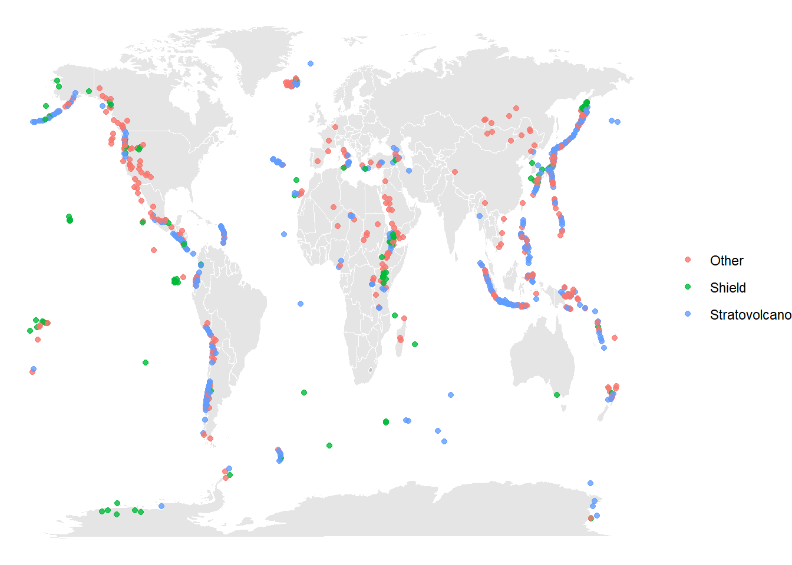
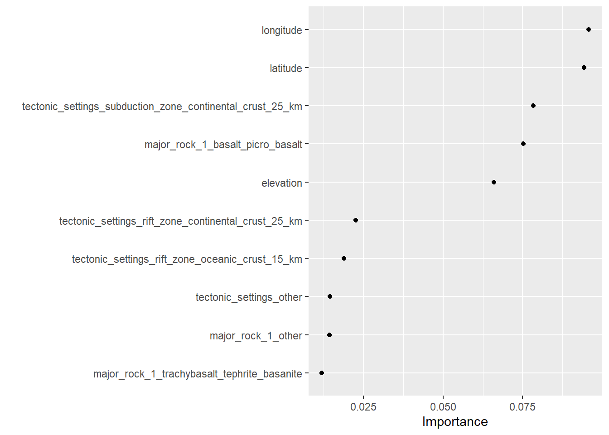
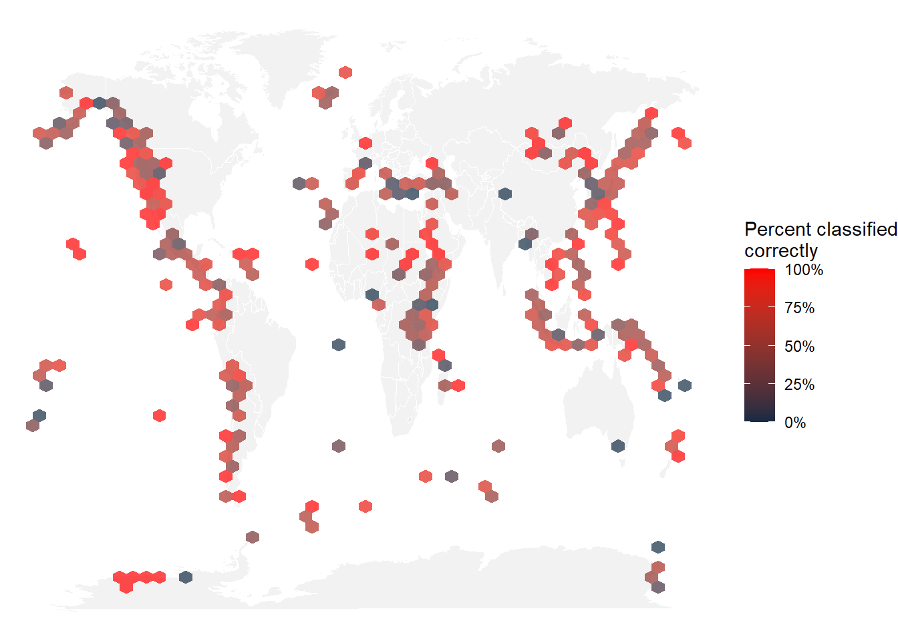

Code
library(tidyverse)Jayjit Das
Our objective in modeling is to forecast the category of volcanoes in this week’s #TidyTuesday dataset, relying on various volcano characteristics such as latitude, longitude, tectonic setting, etc. Since there are more than two volcano types, this task falls under the category of multiclass or multinomial classification rather than binary classification.
# A tibble: 26 × 2
primary_volcano_type n
<chr> <int>
1 Stratovolcano 353
2 Stratovolcano(es) 107
3 Shield 85
4 Volcanic field 71
5 Pyroclastic cone(s) 70
6 Caldera 65
7 Complex 46
8 Shield(s) 33
9 Submarine 27
10 Lava dome(s) 26
# ℹ 16 more rowsGiven the abundance of volcano types and our limited dataset of only 958 examples, building a model for each type might be challenging. Instead, let’s simplify the task by creating a new variable named volcano_type and focus on distinguishing between three main types:
Stratovolcano
Shield volcano
Everything else (other)
As we employ the transmute() function to generate this new variable, let’s also choose the specific variables relevant for modeling. These variables will include information about the tectonics surrounding the volcano and the most crucial rock type.
volcano_df <- volcano_raw %>%
transmute(
volcano_type = case_when(
str_detect(primary_volcano_type, "Stratovolcano") ~ "Stratovolcano",
str_detect(primary_volcano_type, "Shield") ~ "Shield",
TRUE ~ "Other"
),
volcano_number, latitude, longitude, elevation,
tectonic_settings, major_rock_1
) %>%
mutate_if(is.character, factor)
volcano_df %>%
count(volcano_type, sort = TRUE)# A tibble: 3 × 2
volcano_type n
<fct> <int>
1 Stratovolcano 461
2 Other 379
3 Shield 118We will be building a multiclass predictive model since the papers are categorized into three groups: finance, microeconomics, and macroeconomics. Unlike the common use of binary classification models, our objective involves predicting among multiple classes. Before diving into the modeling process, let’s generate an exploratory plot.
Visualizing the distribution of various volcano types.
world <- map_data("world")
ggplot() +
geom_map(
data = world, map = world,
aes(long, lat, map_id = region),
color = "white", fill = "gray50", size = 0.05, alpha = 0.2
) +
geom_point(
data = volcano_df,
aes(longitude, latitude, color = volcano_type),
alpha = 0.8
) +
theme_void(base_family = "IBMPlexSans") +
labs(x = NULL, y = NULL, color = NULL)
These type of relationships between category and title words are what we want to use in our predictive model.
Instead of dividing this relatively small dataset into training and testing data, a set of bootstrap resamples will be generated.
# Bootstrap sampling
# A tibble: 25 × 2
splits id
<list> <chr>
1 <split [958/352]> Bootstrap01
2 <split [958/358]> Bootstrap02
3 <split [958/362]> Bootstrap03
4 <split [958/360]> Bootstrap04
5 <split [958/347]> Bootstrap05
6 <split [958/358]> Bootstrap06
7 <split [958/347]> Bootstrap07
8 <split [958/362]> Bootstrap08
9 <split [958/344]> Bootstrap09
10 <split [958/349]> Bootstrap10
# ℹ 15 more rowsOur multinomial classification model will be trained on these resamples. Next, our data will be preprocessed using a recipe. Considering the substantial imbalance with significantly fewer shield volcanoes compared to the other groups, SMOTE upsampling (via the themis package) will be applied to balance the classes.
library(themis)
volcano_rec <- recipe(volcano_type ~ ., data = volcano_df) %>%
update_role(volcano_number, new_role = "Id") %>%
step_other(tectonic_settings) %>%
step_other(major_rock_1) %>%
step_dummy(tectonic_settings, major_rock_1) %>%
step_zv(all_predictors()) %>%
step_normalize(all_predictors()) %>%
step_smote(volcano_type)First, the recipe() function needs to be informed about the model using a formula and the data it will work with.
Following that, an update is made to the role of the volcano number, designating it as a variable to retain for convenience as an identifier for rows, although it is neither a predictor nor an outcome.
Considering the numerous tectonic settings and rocks in the dataset, less frequently occurring levels are combined into an “Other” category for each predictor.
Subsequently, indicator variables are created, and those with zero variance are removed.
Prior to oversampling, all predictors are centered and scaled (normalized).
Lastly, SMOTE oversampling is implemented to ensure balance among the volcano types.
# A tibble: 1,383 × 14
volcano_number latitude longitude elevation volcano_type
<dbl> <dbl> <dbl> <dbl> <fct>
1 283001 0.618 0.984 -0.875 Shield
2 355096 -1.21 -0.830 2.97 Stratovolcano
3 342080 -0.0153 -1.04 1.50 Stratovolcano
4 213004 0.746 0.101 -0.131 Other
5 321040 0.988 -1.32 1.34 Stratovolcano
6 283170 0.718 1.06 -0.0992 Stratovolcano
7 221170 -0.156 0.158 -0.0956 Stratovolcano
8 221110 -0.0601 0.158 -0.440 Stratovolcano
9 284160 0.120 1.11 -0.644 Stratovolcano
10 342100 -0.0165 -1.04 1.35 Stratovolcano
# ℹ 1,373 more rows
# ℹ 9 more variables:
# tectonic_settings_Rift.zone...Continental.crust...25.km. <dbl>,
# tectonic_settings_Rift.zone...Oceanic.crust....15.km. <dbl>,
# tectonic_settings_Subduction.zone...Continental.crust...25.km. <dbl>,
# tectonic_settings_Subduction.zone...Oceanic.crust....15.km. <dbl>,
# tectonic_settings_other <dbl>, major_rock_1_Basalt...Picro.Basalt <dbl>, …Before utilizing prep(), the defined steps have been outlined but not executed. The evaluation of these steps takes place within the prep() function. The juice() function can then be employed to retrieve the preprocessed data and inspect the results.
Now, the model specification is the focus. In this example, a workflow() is used for convenience. Workflows are objects designed to facilitate the management of modeling pipelines, with components that seamlessly fit together like Lego blocks. This particular workflow() includes both the recipe and the model, specifically a random forest classifier. The ranger implementation for random forests can handle multinomial classification without requiring any special handling.
══ Workflow ════════════════════════════════════════════════════════════════════
Preprocessor: Recipe
Model: rand_forest()
── Preprocessor ────────────────────────────────────────────────────────────────
6 Recipe Steps
• step_other()
• step_other()
• step_dummy()
• step_zv()
• step_normalize()
• step_smote()
── Model ───────────────────────────────────────────────────────────────────────
Random Forest Model Specification (classification)
Main Arguments:
trees = 1000
Computational engine: ranger Fitting workflow to our resamples.
A significant distinction when dealing with multiclass problems lies in the utilization of different performance metrics. The yardstick package offers implementations for a variety of multiclass metrics.
# A tibble: 2 × 6
.metric .estimator mean n std_err .config
<chr> <chr> <dbl> <int> <dbl> <chr>
1 accuracy multiclass 0.642 25 0.00466 Preprocessor1_Model1
2 roc_auc hand_till 0.789 25 0.00321 Preprocessor1_Model1A confusion matrix can be generated to assess the performance of the various classes.
Truth
Prediction Other Shield Stratovolcano
Other 1978 330 824
Shield 364 576 313
Stratovolcano 1144 172 3099Even with the application of SMOTE oversampling, identifying stratovolcanoes remains relatively straightforward.
While accuracy and AUC were computed during fit_resamples(), it’s possible to revisit and calculate additional metrics of interest if the predictions were saved. Additionally, using group_by() on resamples allows for further analysis. Perform the same actions again.
# A tibble: 25 × 4
id .metric .estimator .estimate
<chr> <chr> <chr> <dbl>
1 Bootstrap01 ppv macro 0.584
2 Bootstrap02 ppv macro 0.597
3 Bootstrap03 ppv macro 0.622
4 Bootstrap04 ppv macro 0.552
5 Bootstrap05 ppv macro 0.590
6 Bootstrap06 ppv macro 0.624
7 Bootstrap07 ppv macro 0.608
8 Bootstrap08 ppv macro 0.584
9 Bootstrap09 ppv macro 0.616
10 Bootstrap10 ppv macro 0.579
# ℹ 15 more rowsExploring some variable importance.

The spatial information holds significant importance for the model, with the presence of basalt being the next crucial factor. To delve deeper into the spatial information, let’s further explore it and create a map illustrating the accuracy or inaccuracy of our modeling across the world. We can achieve this by rejoining the predictions back to the original data. Repeat this process once again.
# A tibble: 8,800 × 15
id .pred_Other .pred_Shield .pred_Stratovolcano .row .pred_class
<chr> <dbl> <dbl> <dbl> <int> <fct>
1 Bootstrap01 0.164 0.0844 0.752 8 Stratovolcano
2 Bootstrap01 0.228 0.0559 0.716 10 Stratovolcano
3 Bootstrap01 0.580 0.244 0.175 11 Other
4 Bootstrap01 0.277 0.176 0.546 16 Stratovolcano
5 Bootstrap01 0.247 0.421 0.333 17 Shield
6 Bootstrap01 0.216 0.439 0.344 22 Shield
7 Bootstrap01 0.210 0.608 0.182 26 Shield
8 Bootstrap01 0.213 0.0934 0.694 27 Stratovolcano
9 Bootstrap01 0.291 0.0521 0.657 28 Stratovolcano
10 Bootstrap01 0.332 0.560 0.108 29 Shield
# ℹ 8,790 more rows
# ℹ 9 more variables: volcano_type <fct>, .config <chr>, correct <lgl>,
# volcano_number <dbl>, latitude <dbl>, longitude <dbl>, elevation <dbl>,
# tectonic_settings <fct>, major_rock_1 <fct>Next, let’s generate a map using stat_summary_hex(). Within each hexagon, we’ll calculate the mean of correctness to determine the percentage of volcanoes that were classified correctly across all our bootstrap resamples.
ggplot() +
geom_map(
data = world, map = world,
aes(long, lat, map_id = region),
color = "white", fill = "grey90", size = 0.05, alpha = 0.5
) +
stat_summary_hex(
data = volcano_pred,
aes(longitude, latitude, z = as.integer(correct)),
fun = "mean",
alpha = 0.7, bins = 50
) +
scale_fill_gradient(high = "red", labels = scales::percent) +
theme_void(base_family = "IBMPlexSans") +
labs(x = NULL, y = NULL, fill = "Percent classified\ncorrectly")
---
title: "Multinomial Volcano Classification project"
author: Jayjit Das
code-fold: true
code-tools: true
format:
html:
toc: true
warning: false
---
# Goal: To build a multiclass classification model to predict type of volcano.
Our objective in modeling is to forecast the category of volcanoes in this week's #TidyTuesday dataset, relying on various volcano characteristics such as latitude, longitude, tectonic setting, etc. Since there are more than two volcano types, this task falls under the category of multiclass or multinomial classification rather than binary classification.
```{r}
library(tidyverse)
```
```{r}
volcano_raw <- readr::read_csv("https://raw.githubusercontent.com/rfordatascience/tidytuesday/master/data/2020/2020-05-12/volcano.csv")
volcano_raw %>%
count(primary_volcano_type, sort = TRUE)
```
Given the abundance of volcano types and our limited dataset of only 958 examples, building a model for each type might be challenging. Instead, let's simplify the task by creating a new variable named **`volcano_type`** and focus on distinguishing between three main types:
1. Stratovolcano
2. Shield volcano
3. Everything else (other)
As we employ the **`transmute()`** function to generate this new variable, let's also choose the specific variables relevant for modeling. These variables will include information about the tectonics surrounding the volcano and the most crucial rock type.
```{r}
volcano_df <- volcano_raw %>%
transmute(
volcano_type = case_when(
str_detect(primary_volcano_type, "Stratovolcano") ~ "Stratovolcano",
str_detect(primary_volcano_type, "Shield") ~ "Shield",
TRUE ~ "Other"
),
volcano_number, latitude, longitude, elevation,
tectonic_settings, major_rock_1
) %>%
mutate_if(is.character, factor)
volcano_df %>%
count(volcano_type, sort = TRUE)
```
We will be building a multiclass predictive model since the papers are categorized into three groups: finance, microeconomics, and macroeconomics. Unlike the common use of binary classification models, our objective involves predicting among multiple classes. Before diving into the modeling process, let's generate an exploratory plot.
Visualizing the distribution of various volcano types.
```{r}
world <- map_data("world")
ggplot() +
geom_map(
data = world, map = world,
aes(long, lat, map_id = region),
color = "white", fill = "gray50", size = 0.05, alpha = 0.2
) +
geom_point(
data = volcano_df,
aes(longitude, latitude, color = volcano_type),
alpha = 0.8
) +
theme_void(base_family = "IBMPlexSans") +
labs(x = NULL, y = NULL, color = NULL)
```
These type of relationships between category and title words are what we want to use in our predictive model.
## Building a model
Instead of dividing this relatively small dataset into training and testing data, a set of bootstrap resamples will be generated.
```{r}
library(tidymodels)
volcano_boot <- bootstraps(volcano_df)
volcano_boot
```
Our multinomial classification model will be trained on these resamples. Next, our data will be preprocessed using a recipe. Considering the substantial imbalance with significantly fewer shield volcanoes compared to the other groups, SMOTE upsampling (via the themis package) will be applied to balance the classes.
```{r}
library(themis)
volcano_rec <- recipe(volcano_type ~ ., data = volcano_df) %>%
update_role(volcano_number, new_role = "Id") %>%
step_other(tectonic_settings) %>%
step_other(major_rock_1) %>%
step_dummy(tectonic_settings, major_rock_1) %>%
step_zv(all_predictors()) %>%
step_normalize(all_predictors()) %>%
step_smote(volcano_type)
```
1. First, the **`recipe()`** function needs to be informed about the model using a formula and the data it will work with.
2. Following that, an update is made to the role of the volcano number, designating it as a variable to retain for convenience as an identifier for rows, although it is neither a predictor nor an outcome.
3. Considering the numerous tectonic settings and rocks in the dataset, less frequently occurring levels are combined into an "Other" category for each predictor.
4. Subsequently, indicator variables are created, and those with zero variance are removed.
5. Prior to oversampling, all predictors are centered and scaled (normalized).
6. Lastly, SMOTE oversampling is implemented to ensure balance among the volcano types.
```{r}
volcano_prep <- prep(volcano_rec)
juice(volcano_prep)
```
Before utilizing **`prep()`**, the defined steps have been outlined but not executed. The evaluation of these steps takes place within the **`prep()`** function. The **`juice()`** function can then be employed to retrieve the preprocessed data and inspect the results.
Now, the model specification is the focus. In this example, a **`workflow()`** is used for convenience. Workflows are objects designed to facilitate the management of modeling pipelines, with components that seamlessly fit together like Lego blocks. This particular **`workflow()`** includes both the recipe and the model, specifically a random forest classifier. The ranger implementation for random forests can handle multinomial classification without requiring any special handling.
```{r}
rf_spec <- rand_forest(trees = 1000) %>%
set_mode("classification") %>%
set_engine("ranger")
volcano_wf <- workflow() %>%
add_recipe(volcano_rec) %>%
add_model(rf_spec)
volcano_wf
```
Fitting workflow to our resamples.
```{r}
volcano_res <- fit_resamples(
volcano_wf,
resamples = volcano_boot,
control = control_resamples(save_pred = TRUE)
)
```
## Exploring results
A significant distinction when dealing with multiclass problems lies in the utilization of different performance metrics. The yardstick package offers implementations for a variety of multiclass metrics.
```{r}
volcano_res %>%
collect_metrics()
```
A confusion matrix can be generated to assess the performance of the various classes.
```{r}
volcano_res %>%
collect_predictions() %>%
conf_mat(volcano_type, .pred_class)
```
Even with the application of SMOTE oversampling, identifying stratovolcanoes remains relatively straightforward.
While accuracy and AUC were computed during fit_resamples(), it's possible to revisit and calculate additional metrics of interest if the predictions were saved. Additionally, using group_by() on resamples allows for further analysis. Perform the same actions again.
```{r}
volcano_res %>%
collect_predictions() %>%
group_by(id) %>%
ppv(volcano_type, .pred_class)
```
Exploring some variable importance.
```{r}
library(vip)
rf_spec %>%
set_engine("ranger", importance = "permutation") %>%
fit(
volcano_type ~ .,
data = juice(volcano_prep) %>%
select(-volcano_number) %>%
janitor::clean_names()
) %>%
vip(geom = "point")
```
The spatial information holds significant importance for the model, with the presence of basalt being the next crucial factor. To delve deeper into the spatial information, let's further explore it and create a map illustrating the accuracy or inaccuracy of our modeling across the world. We can achieve this by rejoining the predictions back to the original data. Repeat this process once again.
```{r}
volcano_pred <- volcano_res %>%
collect_predictions() %>%
mutate(correct = volcano_type == .pred_class) %>%
left_join(volcano_df %>%
mutate(.row = row_number()))
volcano_pred
```
Next, let's generate a map using **`stat_summary_hex()`**. Within each hexagon, we'll calculate the mean of correctness to determine the percentage of volcanoes that were classified correctly across all our bootstrap resamples.
### Visualization:
```{r}
ggplot() +
geom_map(
data = world, map = world,
aes(long, lat, map_id = region),
color = "white", fill = "grey90", size = 0.05, alpha = 0.5
) +
stat_summary_hex(
data = volcano_pred,
aes(longitude, latitude, z = as.integer(correct)),
fun = "mean",
alpha = 0.7, bins = 50
) +
scale_fill_gradient(high = "red", labels = scales::percent) +
theme_void(base_family = "IBMPlexSans") +
labs(x = NULL, y = NULL, fill = "Percent classified\ncorrectly")
```